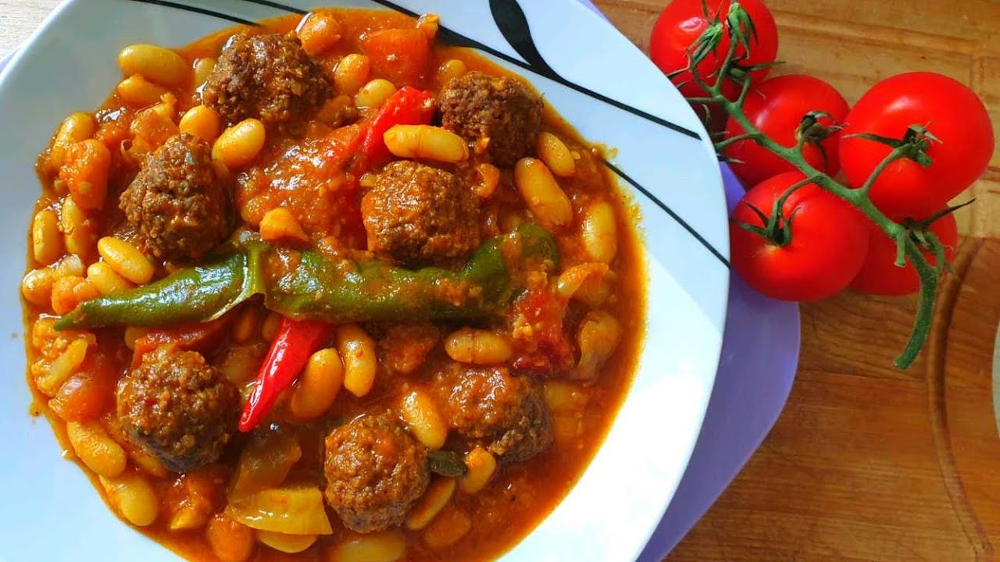

loubia

- Tunisian loubia Recipe
-
Ingredients:
½ medium onion chopped
8-11 small/medium gloves of garlic, peeled
2 tbs ras el hanout spice mix
1-2 tsp salt
½- ¾ cup oil
½ of a 6 oz can of tomato paste
1 tbs paprika (can also use ½ tsp each of paprika and cayenne)
1 tsp black pepper
8 medium pieces of lamb (type of cut based on your preference)
4 cups of water
2 Anaheim peppers
1 poblano pepper
3 15-oz cans of white beans (We used Great Northern beans.
You can also use Cannelloni or white kidney beans or you can use dry beans and soak them over night.)
Preparation
In a mortar and pestle, mash together the ras el hanout, garlic, and a pinch of salt.
In a large pot, heat the oil over medium heat, add the onion and garlic and spice mixture,
paprika (and cayenne if using it), salt, black pepper, and tomato paste, and saute for a few
minutes until all mixed and fragrant. If it starts to stick to the bottom of the pan at all, add a
little bit of water and keep sautéing.
Add the meat and saute for several minutes as well to slightly sear the outside.
Add enough water to fully cover the meat; we used 4 cups total.
Bring to a boil, cover the pot with the lid, and turn the heat down to low and allow to simmer
until the meat is nearly fully cooked (about an hour depending on the size of the pieces of
meat).
Add the whole peppers and the drained beans and cook for another 15-20 minutes or until the beans
are all heated through and the meat is tender.
Ladle up a bowl and serve with fresh baguette.